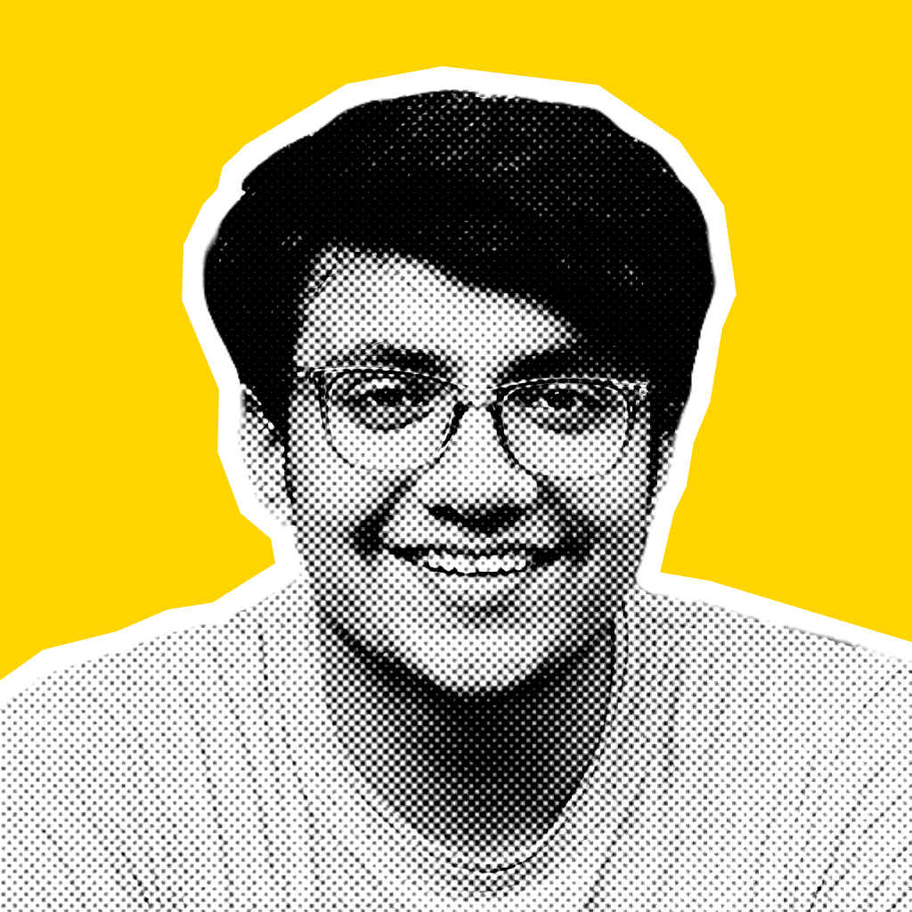

Arslan Khaliq
Full Stack Web Developer
Summary
-
My name is Arslan Khaliq, i'm a 12th grade student
from Pakistan,
I started learning
graphic designing
in oct 2020 during the pandemic from youtube after learning then i
started practicing and also posted my edits and design on instagram, i
started getting some clients from instagram i worked with them and after
few years i shifted my skill and decided to learn full stack web
development in september 2023, then i took
CS50x
i have finished in recently 16 jan, 2024 currently working on my final
project CS50 have gave me strong foundation of basics of programing, now
recently, i took angela yu's Web development course to dive deep into
developemnt.
Work experience
-
As a graphic designer, i have worked with many clients on instgram
mostly projects on image retouching and social media post design.
Skills
-
Image Editing (graphic design)
80%
-
Social media post design (graphic design)
65%
-
Full stack web development (learning)
20%
Soft skills
- Coummunication
- Time mangement
- Listening
- Problem solving
Education
-
Intermediate CS | ICS
-
I'm studing intermediate in computer (ICS), i'm currently in
12th grade in Punjab College Jahanian.
-
I also took cs50x and recently took angela yu's full stack web
development course on udemy.
Certifications
-
Harvad Universties introduction to computer science | cs50x (EdX)
Other